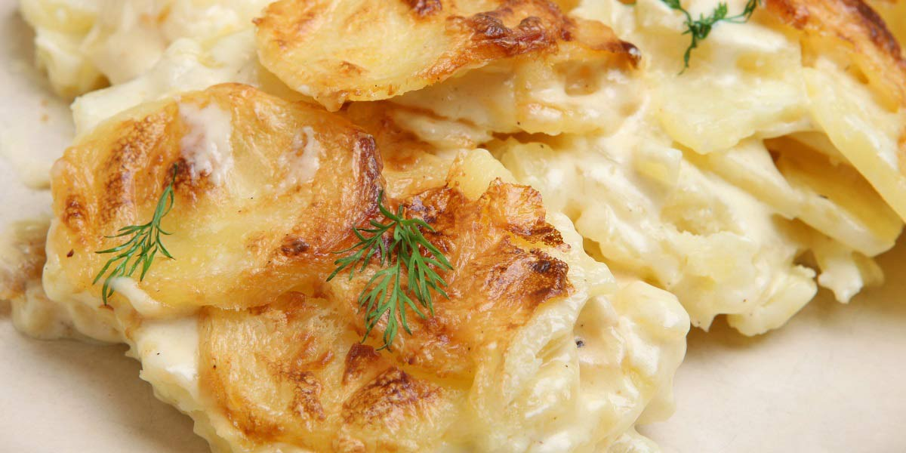

Dauphinoise Potato
Recipe Specification
Ingredients List
| Ingredients | Quantity |
|---|---|
| Maris Piper Potatoes | 1.5kg |
| Double Cream | 500ml |
| Garlic Cloves | 3 Cloves |
| Whole Milk | 500g |
| Salt | To Taste |
| Cracked Black Pepper | 1½ tsp |
| Ground Nutmeg | ½ tsp |
Yield: 8-10 portions
Preparation
- Peel and slice potatoes on mandolin. Slice at a 1mm thickness.
- Crush garlic cloves.
- Mix milk, cream, garlic cloves, nutmeg and 2 tsp of salt. Pour mixture into large saucepan .
- Line a deep baking dish with greaseproof paper.
Cooking Instructions
- Place cream on a medium heat and bring to the simmer.
- Remove cream from the heat, add sliced potatoes and cling film. Leave sliced potatoes to infuse for 30 minutes.
- Pre-heat oven to 160’C.
- Drain sliced potatoes in colander and save cream. Remove garlic cloves. li>
- Apply sliced potatoes to the base on the baking dish. Overlap each slice of potato at the half way point of the previous slice. Once the first layer is complete, season evenly with a pinch of salt and pepper.
- Before starting the second layer, apply sliced potatoes evenly up the sides of the baking dish. Overlap each slice of potato across the half way point of the previous slice.
- Repeat the process for the first layer multiple times, ensuring each layer is seasoned with salt and pepper. Once the level of horizontally sliced potato has reached 4/5 the length of the vertical side slices, fold the side slices over the penultimate layer.
- Apply a final layer of potatoes to cover up the folded side slices. Pour cream used to infuse potato into baking dish and allow it to seep into layers. Stop once last layer of potatoes is submerged and cream is no longer seeping in.
- Apply a layer of grease proof paper to the top of potatoes and cover baking dish with 2 layers of foil.
- Place dish in the oven for 30 minutes.
- Remove foil and greaseproof paper and bake for a further 20 minutes.
- Remove dish from oven and allow to cool to room temperature. Flatten with another baking dish before adding weight to the top and placing in the fridge.
- Pre-heat oven to 180’C.
- Remove dauphinoise potato slab from baking dish, Cut into 12 equal 1 and ½ inch cubed portions and place on a baking tray. Place in the oven for 10 minutes before serving.

Serving Suggestions
Dauphinoise potato go great with roast meats, pies and rich, slowly stewed casseroles.
Storing instructions
Place in an airtight container before placing in the refrigerator. Consume within 4 days of making it.
Reheating Instructions
Place in the microwave for 2-3 minutes.